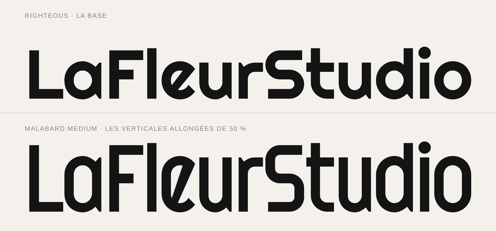
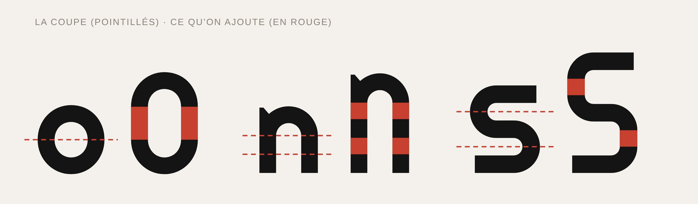
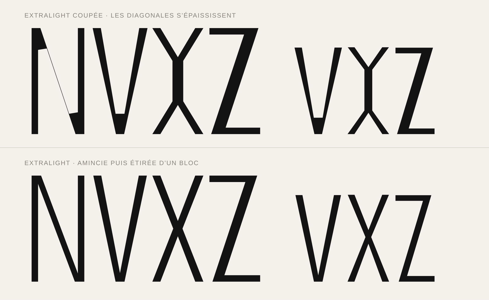
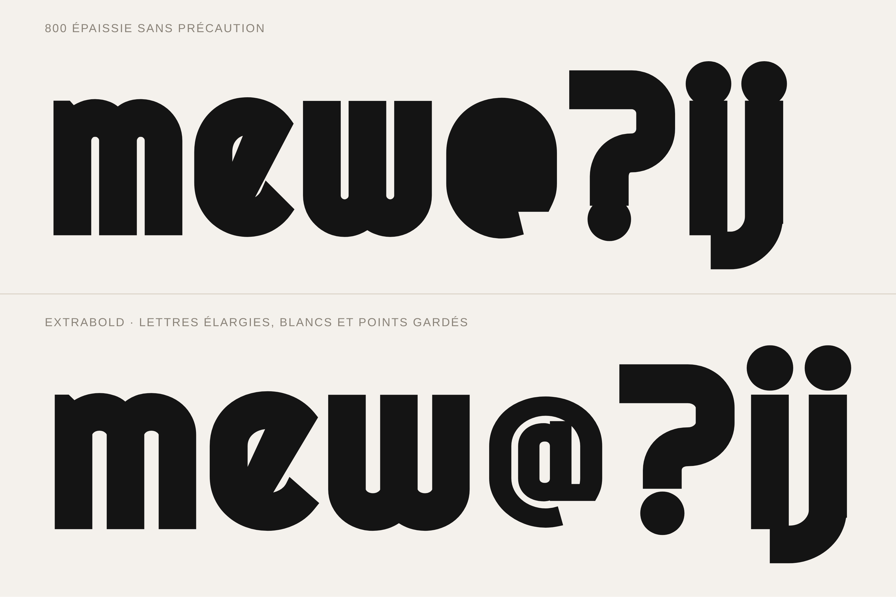

LaFleurStudio · 2026
MALABARD
Display de course allongée. On a rallongé les droites, les courbes n'ont pas bougé. 7 graisses, de l'ExtraLight à l'ExtraBold, + leurs italiques.
Les graisses
De 200 à 800, avec italiques. Même hauteur pour toutes, seul le trait change.
Testeur
Clique et écris.
Une seule famille « Malabard » pour les 14 styles : de 200 à 800, droit et italique (voir « Télécharger »).
Caractères
Majuscules, minuscules, chiffres, accents (Europe centrale comprise), ponctuation, symboles.
Comment on l'a faite
Malabard part de Righteous. On l'a transformée étape par étape, avec des scripts Python.
On a pris Righteous
Righteous, d'Astigmatic. On a allongé seulement ses traits verticaux.
Les arrondis et les horizontales ne bougent pas : les o deviennent des pilules, les lettres prennent +50 % en hauteur sans s'élargir.

Couper et rallonger
On coupe chaque lettre à l'horizontale, là où il n'y a que du vertical. On insère 540 unités (+50 % de la hauteur des minuscules) : tout ce qui est au-dessus monte d'un bloc.
Les lettres à deux étages (n, S, B, E, 8…) sont coupées deux fois, une demi-hauteur chacune.

Les diagonales, d'un bloc
Couper une diagonale la déforme : elle devient un coin, plus épais d'un côté. Ça se voit surtout dans les fines.
Pour K, N, V, X, Z, k, v, x, z, 4 et 7, on étire d'un bloc toute la bande des diagonales. Elles restent parallèles.

7 graisses
La Medium, c'est Righteous allongée. Les autres : traits amincis ou épaissis, allongement ajusté pour retomber sur les mêmes hauteurs.
En gras, les lettres s'élargissent un peu pour que le e, le m et le w respirent.
| Style | Poids | Fût du H | Trait horizontal | Largeur |
|---|
Points, accents et blancs
En gras, tout se serre. Le point du i monte, la queue du ? raccourcit, les accents s'écartent, le @ garde sa spirale ouverte. En fin, l'inverse : les jonctions du K et les cédilles restent attachées.

Les italiques
Chaque graisse, penchée à 12°. Certaines paires se touchent (F–l, S–t) : on les écarte au crénage. Quelques-unes en ExtraLight, quelques centaines en ExtraBold.
Télécharger
Libre et gratuite, même en commercial. Garde la licence avec la police.
Installation sur un site web
@font-face { font-family: "Malabard"; font-weight: 500;
src: url(Malabard-Medium.woff2) format("woff2"); }
@font-face { font-family: "Malabard"; font-weight: 500;
font-style: italic;
src: url(Malabard-MediumItalic.woff2) format("woff2"); }
/* … une règle par style : ExtraLight 200, Light 300,
Regular 400, Medium 500, SemiBold 600, Bold 700,
ExtraBold 800, et la même chose en italique */